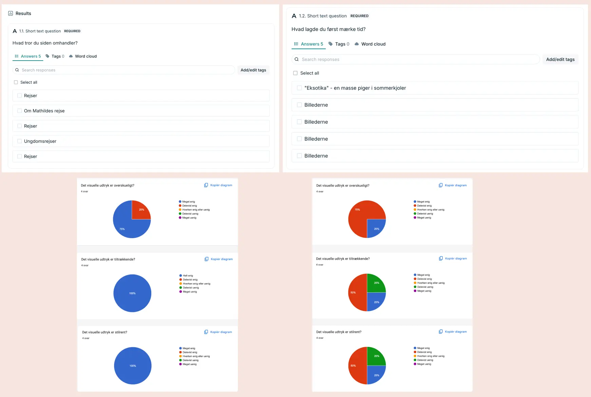

Grundlæggende UX/UI
Tema
I tema 3 blev jeg introduceret for UX/UI-design (user experience design & user interface) med fokus på brugervenlige digitale grænseflader. Gennem mit arbejde i Figma, HTML og CSS skulle der skabes funktionelle og æstetiske løsninger, der byggede på reele brugerindsigt. Til sidst i dette tema fik vi til opgave at gennemgå hinandens sites, som vi gjorde i form af en heuristisk evaluering.
Læring
Ud fra dette projekt har jeg lært den grundlæggende forståelse mellem brugere og brugergrænseflader. Jeg har arbejdet med research, test og design i Figma. Derudover har jeg fået indsigt i gestaltprincipper, typografi og responsivt design, som er de centrale elementer der tilsammen styrker den digitale brugeroplevelse.
Proces & løsning
Måden jeg greb denne opgave an på var ved at starte med at læse opgave formuleringen, for at få et overblik over hvad opgaven skulle indeholde. Designet af denne opgave var valgfri, men det var et krav at websitet skulle have et formål. Jeg valgte derfor at designe et site med henblik på grupperejser til asien, varende under 3 uger. Jeg har selv været på grupperejse til Bali, og syntes det var svært at finde grupperejser der varede under 2 måneder, hvilket kan være en barriere for dem, der ønsker en kortere rejseoplevelse.
Jeg udarbejdede opgaven i overensstemmelse med opgavespecifikationerne, og dokumenterede hele projektforløbet i Figma. Jeg indledte processen med research, baseret på min brainstorm, og udviklede moodboards, wireframes og styletiles, som jeg efterfølgende testede via Google Forms. Herefter arbejdede jeg videre med mine lo-fi prototyper for at begynde at visualisere strukturen og opbygningen af mit site. For at evaluere min forside lavede jeg en 5-sekunders test via Lyssna, som havde til formål at undersøge, om brugerne umiddelbart forstod sidens budskab og formål. Det gjorde de og jeg begav mig videre i hi-fi protoype, grid layout og begyndte herefter at kode mit site.
